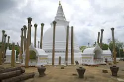

The Sacred City of Anuradhapura
Anuradhapura is the first capital city of Srilanka & is the most expressive sight in the country which contains architectural & archeological ruins as well as enigmatic places where truth is yet to be discovered. All the places of major attraction within the sacred city are situated interconnected.
Places Of Sacred Value
Ruwanweliseya
 (1).webp)
A stupa (dome shaped building) which includes most amount of body relics of Lord Buddha. This is the stupa of most sacred value in Sri Lanka. Thousands of Buddhists visit this place to worship the body relics of Lord Buddha.
Sri Maha Bhodi
 (1).webp)
This is the oldest human planted tree in the world. It is worshiped by thousands of Buddhists daily due to the sacred value of it as Lord Buddha said to have attained enlightenment under Sri Maha Bodhi in India & Sri Lanka has the southern branch of it.
Thuparamaya
This is the first Buddhist temple built in Sri Lanka. Stone pillars around the stupa shows that there had been a conical roof sheltering the stupa.
Abhayagiriya Viharaya
A Monastery site where you find most extensive ruins in the world. This too has a sacred value & the architectural designs in the monastery witnesses the aesthetic & cultural history of the city.
Places Of Architectural Value
Sandakada Pahana
A semicircular slab decorated with carvings placed at the bottom of staircases of ancient religious as well as royal palaces. Moonstone displays a unique creation of Sri Lankan architecture. The symbols carved on the moonstone displays the cycle of life (sansara).
Kuttam Pokuna

Two ponds built in ancient Anuradhapura kingdom with shows the architectural & engineering creativity of the Sri Lankans.
Isurumuniya Temple
A Buddhist cave temple built in 307 BC to 267BC with carvings of special interest. The elephant pond, The Royal Family & the Isurumuniya Lovers are most famous carvings you find in the temple.
Lovamahapaya
A nine storied palace built in 2nd century B. C with a bronze tiled roofing . This was constructed as a resident for Buddhist monks & had 9 floors with 1000 rooms. These nine floors had been supported with 1600 stone columns which are visible now in ruins.
Places With Unsolved Mysteries
Ranmasu Uyana

An ancient Royal Garden. In this garden there is an ancient pond & ruins of buildings. It is believed that the elephant carvings in the pond relates to a puzzle & the map located in the garden encircled by fish is believed to be the star gate map which was an interface to universe. Lots of tourists visit to resolve the puzzle in the map to unlock the universe secrets.
Kaludiya Pokuna

An ancient Buddhist monastery undisturbed by humans to date. Monastery is surrounded by diversified flora & fauna rich forest. The water in the pond is black in color & according to folk tales at the bottom of the pond there is an opening to the universe. Ancient king Rawana used to travel to universe through this back pond but the truths of these mythical stories are yet to be revealed.